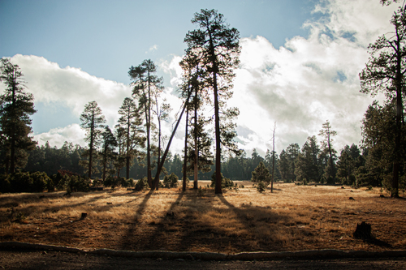
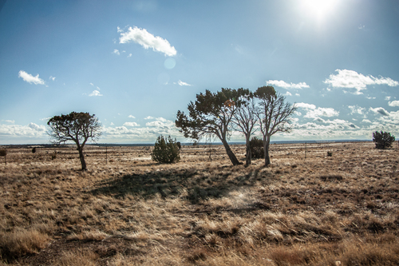
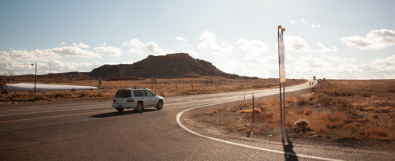

Abel Montes De Oca Fang
Hi my name is Abel! I’m a student at University of California of Riverside studying psychology as my major. I will be expected to graduate by 2030 where I intend to pursue career goals and maintain my academics. I love traveling, taking photos, and love many forms of art. I really enjoy films, shows, and anime the most because they’ve been a highlight pastime in my life. I like to try new international foods, but my spice tolerance isn’t very strong. I became very interested in psychology after taking a summer college class and how societies interact from contrasting viewpoints. I’ve also recently grown interested in governments and I hope to have UCR be the platform for my studies on how psychology pairs with it. I would love to document or understand more the role people and leaders work together by bridging gaps between the two. Forming communities and being able to address situations for proper solutions are essential goals in my life I hope to complete.
I graduated from Scripps Ranch High School which gave me an education in multimedia and journalism leading me to join the UCR newspaper, The Highlander. My high school projects include participating in the San Diego Museum of Photographic Arts Youth Exhibition, Visual and Performing Arts Honor show, creating segments for a weekly high school news show, and co-directing a western short film. Segments covered for my high school news span from local news spreading awareness of clubs and school events to larger topics such as the L.A fires and passing of former U.S. president Jimmy Carter. My first official project in my college career will be writing an article for The Highlander about a student-led concert. I intend to pursue work on writing more articles for UCR and return to my photography roots to give the news to students across campus. I hope to use this as a framework and find open doors to several opportunities for my life goals. Careers around my work would be a dream for me to pursue to unite many groups.
Volunteer work I’ve participated in has been working as a tutor for four years and as secretary for two years in 1must, a student-led organization in San Diego to help with African child refugees in K-12 academics, raising donations to provide school supplies, and events for the kids to participate in. I was able to be given the opportunity to work with the kids and other students across San Diego to teach English, math, history, and geography. They were really fun to interact with and talk about their passions, especially sports. We were able to host bake sales that were all student made, host an annual pool party for the kids during the summer, and even create holiday events, all free for the kids. While as secretary I managed events, contacted tutors, counted volunteer hours, and tracked a ticketing system for the kids who were on task with their tutoring so they could earn rewards or candy.
Experience
Contributing Writer
• Writing articles
• Going to events
• Interviewing staff and audience
• Working with editors
Education
UC Riverside
Portfolio






